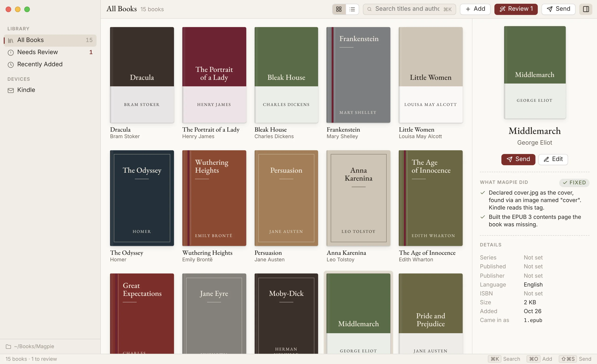
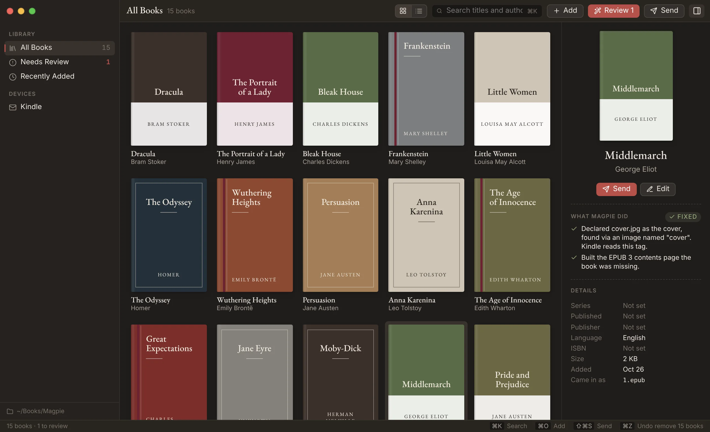
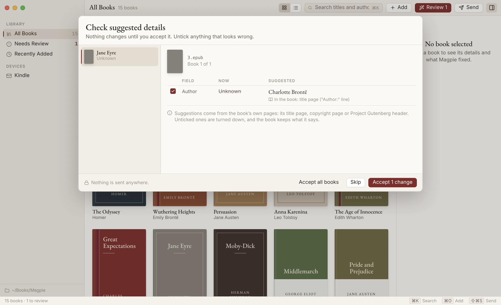
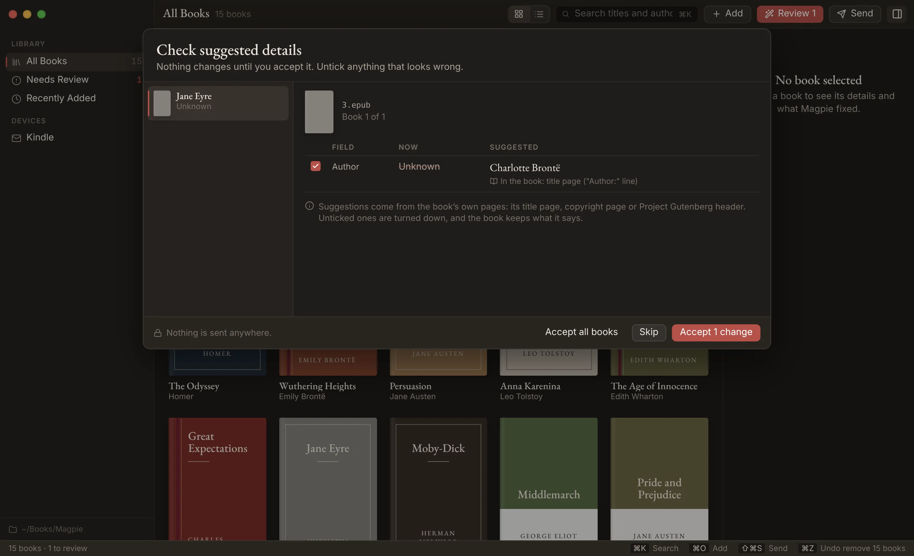

Magpie is a quiet Mac app for the EPUBs you own. It repairs the ones your Kindle rejects, finds the covers that went missing, gives "Unknown" its author back, and keeps the whole shelf tidy.
Download for Mac

No account, no upload, no subscription. Your books are copied into one folder you can see in Finder, and the file you started with is kept exactly as it was.
Bad zip wrappers, invalid pages, chapters missing from the reading order, contents pages that point nowhere. Each fix is explained in a plain sentence.
When a book calls itself "9780316_final(1)" Magpie reads its title page and suggests a better name. Nothing changes until you say so.
A Mail draft to your Send to Kindle address with the book attached, or a Kobo-ready copy written straight to the reader when you plug it in.
Magpie spots your Calibre library and copies your books over with their series, publishers and descriptions. Calibre's own files are never touched.
Every change, from an edited title to a hundred removed books, comes back with ⌘Z. Removed books wait 30 days before they go for good.
Magpie is for books you own as files: Standard Ebooks, Project Gutenberg, Humble Bundle, BookFunnel, and DRM-free store downloads.
Structural fixes happen quietly, because they never change what a book says. Titles and authors are different. Magpie shows you where each suggestion came from, unticks the ones it isn't sure about, and waits.


Magpie includes a local MCP server, so Claude and other AI assistants on your Mac can search your library, tidy details and send books for you. Every change they make is a normal Magpie change you can see and undo. They can't empty the bin or change your settings, and a Kindle email always waits for you to press Send.
"Find every Discworld book with the series missing and fix it."
Magpie isn't notarized by Apple yet, so macOS will stop the first launch and say it can't check the app. It's the same app you can read on GitHub. To open it once and for all:
Comfortable in Terminal? xattr -dr com.apple.quarantine /Applications/Magpie.app does the same thing.